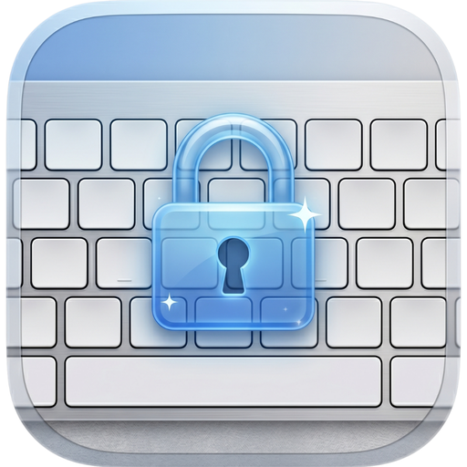
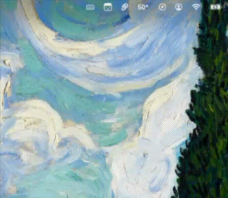

dirtymac
A native macOS menu bar utility that temporarily locks your keyboard so you can clean it without triggering keys. Mouse and trackpad stay fully responsive.
brew install --cask erenmalkoc/tap/dirtymac
- macOS 14 or later
- No network access
- MIT licensed

Why
Wiping crumbs out of a MacBook keyboard usually means dragging a Finder window full of garbage characters and accidentally launching apps. dirtymac suppresses every keystroke at the system event-tap level until you click stop. Your trackpad keeps working the entire time.
Features
Small utility, but thorough about the edge cases.
-
One-click lock
Lock and release straight from the menu bar — no window, no Dock icon.
-
Every key, not just letters
Regular keys, modifiers, and the brightness, volume, media and F-key controls are all blocked.
-
Basic mode
Mouse and trackpad stay live — click the menu bar icon to release the lock.
-
Advanced mode
Optionally freeze the mouse and trackpad too, pick which key classes to block, and set an auto-unlock timer.
-
Always a way out
Hold Esc for three seconds to release — works even in full lockdown.
-
Guided first launch
Three-step onboarding with live Accessibility-permission status.
-
Live status
Elapsed time and auto-unlock countdown while locked; the event tap re-enables itself if macOS times it out.
-
12 languages
Runtime language switching and a light / dark override — no relaunch needed.
-
Nothing leaves your Mac
No network access, no analytics, no background daemons.
Install
macOS 14 (Sonoma) or later.
Homebrew (recommended)
The cask is signed and notarized, and upgrades come through brew.
brew install --cask erenmalkoc/tap/dirtymac
Homebrew 6.0 and later require third-party taps to be trusted first. If you see
Refusing to load cask … from untrusted tap, trust the tap once and retry:
brew trust erenmalkoc/tap
Manual download
Grab the latest signed and notarized DMG, then drag dirtymac.app into
/Applications.
Both the app and the DMG carry their own stapled notarization ticket from 1.1.2 on, so the installed copy verifies with no network at all. To check your copy:
xcrun stapler validate /Applications/dirtymac.app
Permissions
dirtymac needs Accessibility access to intercept keyboard events. On first launch, click the menu bar icon and choose Grant Access; macOS then prompts you to enable dirtymac in System Settings → Privacy & Security → Accessibility. Toggle it on and reopen the popover.
The accessibility tap only swallows events — nothing is recorded, logged or forwarded.
How it works
dirtymac creates a CGEventTap at the session level. The event mask is built
from the active lock configuration: keyDown and keyUp are
always present, while flagsChanged, the aux-control channel behind
brightness / volume / media keys, and the mouse, trackpad and scroll types are added only
when the matching Advanced toggles are on. The callback returns nothing for blocked
events, removing them from the system input queue.
In Basic mode the pointer types are never in the mask, so the mouse and trackpad keep working — including the click that opens the menu and releases the lock. Advanced full lockdown adds them, and the universal hold-Esc exit plus a mandatory auto-unlock timer guarantee the lock can always be released. The power button is deliberately let through so a hardware escape hatch always remains. If macOS disables the tap after a timeout, dirtymac re-enables it automatically.
Privacy
dirtymac runs entirely on your Mac: no network connections, no telemetry, analytics or crash reporting, and no background processes — quitting the app fully releases the keyboard. The hardened runtime is enabled; the app is unsandboxed because the system event tap requires it.